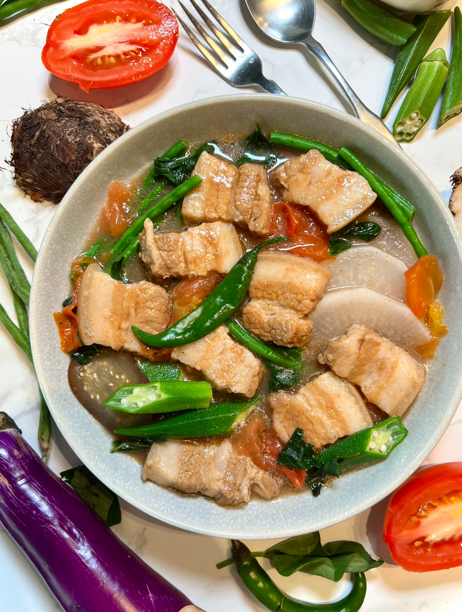

Pork Sinigang
Pork Sinigang is a comforting Filipino soup known for its signature tangy flavor. Made with tender pork simmered in a sour broth
and paired with fresh vegetables, it’s a hearty dish often enjoyed with rice. Its sourness, usually from tamarind, makes it refreshing and perfect for rainy days or when craving something warm and flavorful.

Ingredients
- 2 lbs pork belly
- 1 lb young tamarind
- 1 bunch water spinach
- 8 pieces string beans cut into 2-inch pieces
- 2 pieces eggplants sliced
- 1 piece daikon radish optional
- 3 tablespoons cooking oil
- 8 pieces okras
- 2 pieces tomatoes sliced into wedges
- 2 pieces long green pepper
- 1 piece onion sliced into wedges
- 2 quarts water
- Fish sauce and ground black pepper to taste
How To Cook
- Boil young tamarind in 2 quarts of water for about 40 minutes. Strain the broth through a sieve, pressing the tamarind to extract all the juices.
- Transfer the tamarind broth to a pot and bring it to a boil.
- Add pork belly, onion, and half of the tomatoes.
- Skim off any scum, season with fish sauce, then cover and simmer for 1 hour until the pork is tender.
- Stir in the daikon radish and eggplants, cooking for 5 minutes.
- Add long green peppers, string beans, the remaining tomatoes, and okra, and cook for another 3 minutes.
- Mix in the water spinach stalks, season with more fish sauce and ground black pepper, and cook for 2 minutes.
- Add the water spinach leaves, cover, and let the residual heat cook them for about 3 minutes before serving.
Tips & Tricks
- Meat Quality. Tender meat is key to a good sinigang. Simmer the pork for 60–90 minutes, or longer if needed, to make it soft and flavorful. Cuts with some fat, like pork belly or pork shoulder, work best for juicy, moist meat.
- Flavoring the Broth. Onion and tomato form the base flavor. Add them early in cooking, but if you prefer chunks of tomato in your soup, set some aside and add them near the end.
- Using Available Ingredients. Sinigang is flexible. You don’t need every vegetable on the list. As long as you have pork, leafy greens, and a souring agent, you can make it work.
- For Busy Cooks. A slow cooker is a great option. Just remember to add the spinach or kangkong only before serving to keep it fresh.